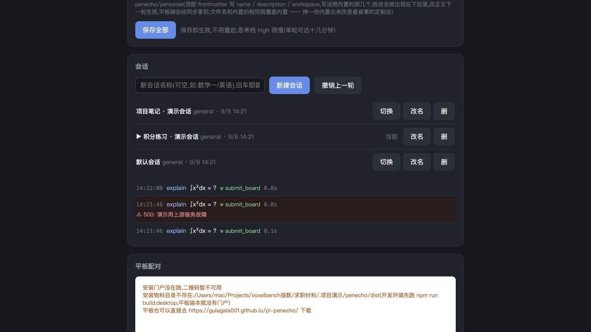

PRODUCT EXPLORATION / PENECHO
PenEcho
手写之后，项目还能继续。
让有记忆、能使用文件的智能体进入白板，并探索电脑与安卓端之间的持续使用。
各端运行与项目资料延续，是应用改造的重点。结构图解 · 非设备实拍
一次回答之后，工作不该就此断开。
手写学习与资料整理往往跨越多次会话、多个地点。真正想延续的是项目，而不只是某一张白板。
PenEcho 改造的重点，是把常驻 Agent、可读写的工作区与会话存档接入手写场景。原始目标还要求将运行环境装进安卓APK，让手机离开电脑后仍可独立使用。
围绕持续使用来组织功能。
长期记忆放进文件。
工作区资料与记忆作为文件保存，Agent 可在指定范围内读取和写入；会话作为当前工作的上下文。不同主题可使用不同角色与工作区，避免把所有使用都挤进同一条聊天。
安卓端也有自己的运行环境。
原始目标是安卓单APK内置白板、桥接与运行环境。它不是电脑屏幕的投影；离开电脑后仍需联网调用模型，不能理解为离线大模型。现有源码、公开安装包与历史模拟器运行记录形成对应证据；跨设备长期稳定性仍需继续验证。
同步文件，也保留选择。
电脑与安卓端通过Syncthing同步项目文件夹，可选择双向或单向同步。配对与安装引导服务于普通使用者上手；同步引擎来自上游，本项目做流程集成。
产品化重点在整条使用路径。
- 从安装到第一次使用
电脑图形app、手机扫码安装和配对，希望减少配置多个工具的负担。陌生人是否真的能独立上手，仍需实际使用验证。
- 从一次问答到持续项目
会话保存、文件记忆和工作区资料共同支撑延续，而不只是让AI在白板上写一段文字。
- 从一个设备到两个端点
各端独立运行，资料按项目同步。代价是首次安装、配置与同步状态处理更复杂，也需要处理设备和网络差异。
真实界面与当前边界。

独立副本实际走通了输入、桥接、文字与公式草稿确认、会话新建与切换。现有源码还包括工作区文件工具、会话存档、安卓运行和配对流程。
本次求职截图使用模拟模型与同步服务。项目2026年7月计划另记录了模拟器冷装、真实同步和独立板书流程，并有一次用户平板同步反馈；这些是历史记录，本轮没有重新复验，也不能据此宣称所有设备长期稳定。
展开源码归属与本次检查
PenEcho提供白板；pi提供Agent运行时；Syncthing提供同步。个人项目在这些基础上进行桥接、会话、文件工具与双端应用集成。此前103项限定范围检查及本次演示由求职助手执行，不计为本人独立开发或调试能力。公开v1.1.0发行资产包括安卓APK、macOS DMG与Windows ZIP；v1.0.1发行说明记录了同步进度可见性和安卓端同步路径修复。公开v1.1.0发行资产包括安卓APK、macOS DMG与Windows ZIP；v1.0.1发行说明记录了同步进度可见性和安卓端同步路径修复。

NEXT EXPLORATION